《Cell Metabolism》：肾脏疾病&代谢&核受体ESRRA
原文：https://mp.weixin.qq.com/s?__biz=MzAwMzIzOTk5OQ==&mid=2247498860&idx=2&sn=156afeec25201c7baa880af8daac8c60&chksm=9b3c853cac4b0c2a2ca09f44fd487c6d8d9701cb447f318c89f83a53e1a7b712d6f10ff17c43#rd 合集：单细胞教程全收录 / 文献速递
Biomamba荐语
总是有同学问我有没有什么好的单细胞思路，能不能给他们整理一下思路，最好把配套的代码都写好给他们。我又不是啥神仙，我也造不出思路来，好的思路当然都在高分文章里啦:
在漫天的“铁死亡”与“凋亡”、“焦亡”中，原本的细胞代谢、免疫浸润等研究倒显得不那么俗套。本篇文章于20年发表于《Cell Metabolism》，影响因子高达27，就内容而言完全匹配得上该期刊的高质量，无论是单细胞的各项基础和进阶分析，还是WB、免疫荧光等实验结果，处理的都较为妥当，尤其是对PT细胞的亚群分析也较为自然，没有像紧跟生信"钱"沿,胰腺癌&免疫多模态图谱里那样拿些不成体统的marker来糊弄大家，整体来说是一篇研究肾脏或单细胞测序领域值得一看并深入学习的文章。
doi:
10.1016/j.cmet.2020.11.011
链接：
https://sci-hub.st/10.1016/j.cmet.2020.11.011
Highlight
● 在健康和疾病条件下，PT细胞存在不同的分化状态。
● 健康肾脏组的PT细胞分化为两种主要的细胞类型：PCT和PST，而疾病组的PT细胞分为9个亚群，使用锚基因来识别关键的细胞类型，能够识别更多的异质细胞群体。
● 鉴定出一种前体样细胞
● 这种细胞高水平表达IGFBP7，低水平表达分化的PT细胞标志物（IGFBP7是AKI最著名的生物标志物之一）
● PCT和PST细胞之间存在联系
● PCT细胞共表达PST标记，因此在疾病条件下，PCT细胞可能会经历影响其表型特征的转录变化。
● PT细胞的代谢是PT细胞分化的主要驱动因素之一，FAO和OXPHOS直接驱动PT细胞的分化，ESRRA通过直接结合和调节PT基因的表达而在耦合代谢和分化过程中发挥核心作用。
● scRNA-seq与bulk RNA-seq——差异基因分析，细胞异质性和细胞组分变化，亚群和细胞轨迹分析，RNA速率分析
● 体外类肾脏物质——代谢驱动了PT细胞成熟分化
● 细胞培养——验证了抑制ESRRA对PT细胞分化有负面影响
● 小鼠模型——验证了ESRRA通过改善代谢间接调节PT分化
● 患者样本——验证了脂质代谢基因的表达与PT细胞分化程度呈正相 关， 与纤维化程度呈负相关
● scRNA-seq与bulk RNA-seq的结果给予细胞异质性变化和细胞组分变化两个方面的思路
● 在疾病中高表达的基因与免疫细胞比例相关，而不是与细胞异质性变化相关。然而，细胞异质性在驱动大量基因表达变化方面发挥了关键作用。
● ESRRA不仅通过调节细胞代谢的表达，还通过调节关键的细胞类型特异性基因的表达，将细胞分化状态和代谢结合在一起
● ChIP-qPCR——ESRRA通过结合启动子直接调节PT分化
ESRRA-KO FAN鼠模型——ESRRA通过改善代谢间接调节PT分化
● 新陈代谢和细胞状态的耦合将能量的生产和利用与细胞功能和谐地结合在一起
Abstract
● 背景
CKD 患者的PT细胞萎缩与肾功能密切相关。在患者和小鼠CKD模型中，细胞代谢（如参与脂质代谢、脂肪酸氧化和氧化磷酸化的基因）与疾病状态密切相关。
● 结论
PT细胞的代谢是PT细胞分化的主要驱动因素之一，FAO和OXPHOS直接驱动PT细胞的分化，ESRRA通过直接结合和调节PT基因的表达而在耦合代谢和分化过程中发挥核心作用。
● 方法
通过GO分析、亚群和细胞轨迹分析、RNA速率分析提出猜想，用体外类肾脏物质、细胞培养、小鼠模型、患者样本分析进行验证。
● 意义
新陈代谢和细胞状态的耦合将能量的生产和利用与细胞功能和谐地结合在一起。同时，这为基于对ESRRA等核受体的依赖来操纵细胞命运、PT细胞分化和新陈代谢提供了理论基础。
Results
● 1. 纤维化肾脏细胞异质性增加，细胞组分变化对测序有强烈影响
● 结果1：scRNA-seq结果表明纤维化肾脏细胞异质性增加，在上皮细胞中，PT细胞显示出最多的差异表达基因。在疾病组的PT细胞中，表达水平较低的Slc（与细胞分化相关）、FAO、OXPHOS相关基因。
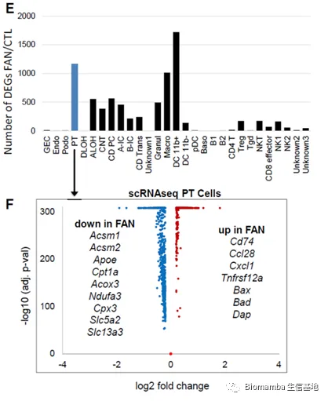
● 结果2：bulk RNA-seq结果表明免疫相关基因在疾病组中上调，代谢相关基因下调，且下调的基因大多富集在PT细胞。
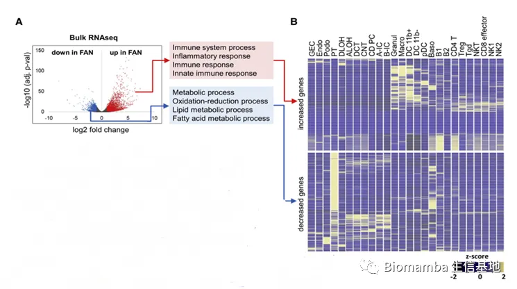
● 结果3：bulk RNA-seq与scRNA-seq结果对比表明细胞组分变化对测序有强烈影响，在疾病中高表达的基因与免疫细胞比例的变化有关，而不是与细胞异质性变化有关。于是，根据细胞比例调整数据后，得到真正显著变化的基因。
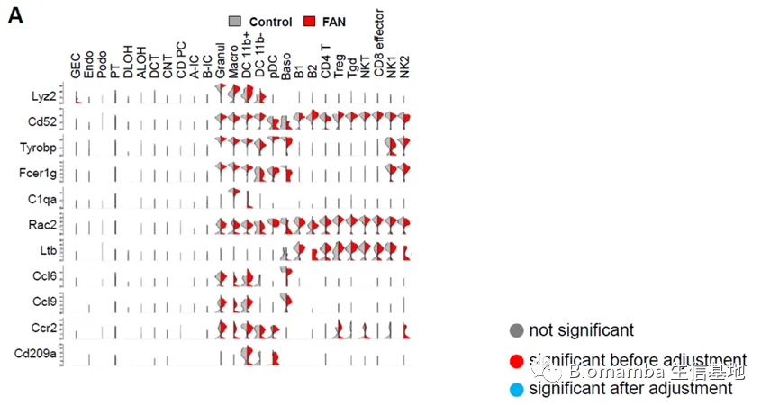
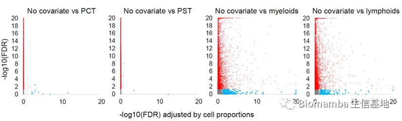
● 2. 分化改变在纤维化过程中驱动PT反应
● 对所有样本进行亚群和细胞轨迹分析、RNA速率分析。
● 结果1：发现了新的细胞类群（PT细胞起源于一种前体细胞）。并且PT细胞分化并不需要细胞增殖。
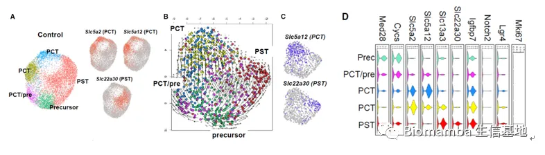
● 结果2：FAN组PT细胞分化轨迹并不那么有条理。PCT共表达PST标记，这表明在疾病条件下，PCT细胞可能会经历影响其表型特征的转录变化。并且，已经表达终末分化标记物如Slc5a2或Slc22a30的细胞的分化明显逆转，这表明分化失败而不是去分化是已发现的细胞状态变化的原因。
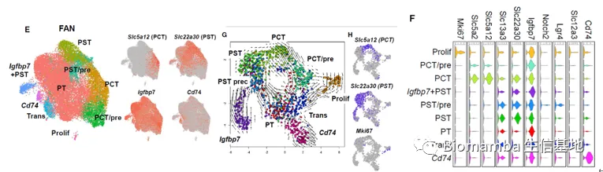
● 3. PT细胞分化缺陷与脂质代谢变化
● 将所有样本结合在一起做细胞轨迹分析。
● 结果1：患病的PT细胞终末分化水平低（终末分化的PT细胞中FAN组占比低）。对PT细胞分化的PCT和PST细胞分别做轨迹分析，也验证了这一点。离子转运、脂代谢与细胞分化呈正相关。
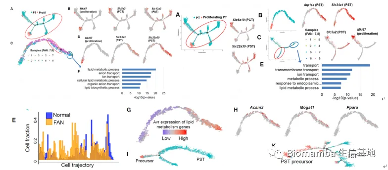
● 结果2：沿分化轨迹，离子转运和脂代谢相关的基因上调。
● 为了验证这一点，将UUO（肾纤维化的单侧输尿管梗阻模型）的scRNA-seq与FAN对比，发现两者分化轨迹相似，都缺乏终末分化的PT细胞。并且，沿细胞轨迹检查与PT分化相关途径的基因（FAO、OXPHOS、离子转运）下调。
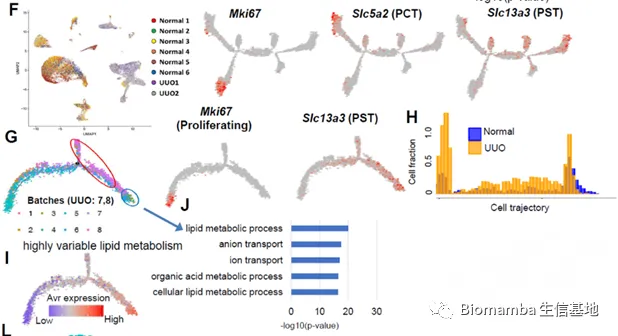
● 4. PT细胞分化与代谢变化的关系
● 猜想：代谢驱动了PT细胞成熟分化。
● 为了验证这一点，作者在类肾脏器官样物质上测试了FAO和OXPHOS在发育中的肾脏器官PT细胞分化中的作用。
● 首先，作者从这种体外的类肾脏器官样物质的bulk RNA-seq与scRNA-seq结果中识别出多种类型肾脏细胞，证明了其会产生与肾脏相似的分化。
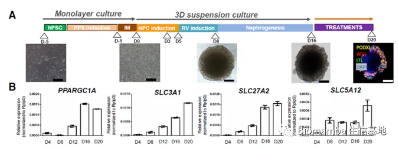
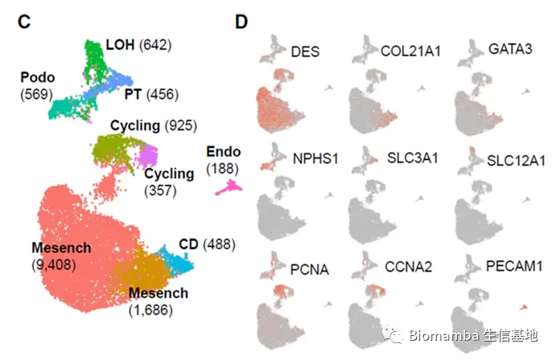
● 接着，发现其中SIX阳性祖细胞分化产生的细胞有PT标志物Slc3A1，因此可以认为它与PT细胞类似。并且分析沿该细胞分化轨迹变化的基因，发现FAO与Slc相关基因上调，这也与之前的发现一致。
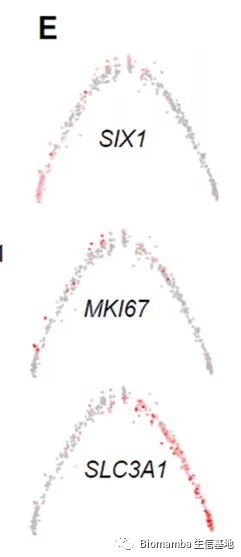
● 在EGM（内皮细胞生长液，糖酵解促进剂）和REGM（肾上皮细胞生长液，OXPHOS促进剂）中分别培养该细胞。
● 结果1：培养4天，REGM培养基中该细胞的PPARGC1A mRNA水平、线粒体OXPHOS蛋白水平、脂代谢基因表达更高。并且REGM使PT细胞标志物（SLC34A1、SLC27A2、SLC5A12、SLC6A19和SLC3A1）上调。
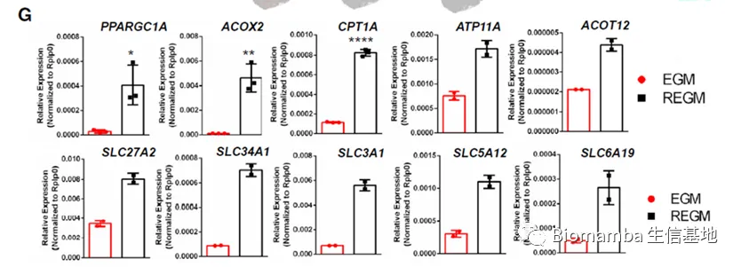
● 结果2：免疫荧光+LTL凝集素标记证明REGM中有更高PT细胞数量。
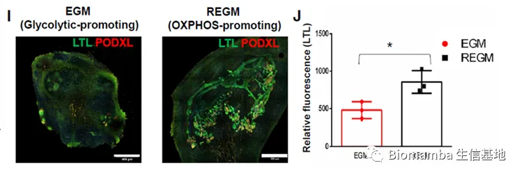
● 5. 核受体ESRRA与PT细胞分化的关系
● 猜想：ESRRA促进PT细胞分化。
● 首先，作者分析小鼠肾脏单细胞开放染色质数据(ScATACseq)，发现在PCT和PST细胞中最丰富的开放结合基序是HNF4a、HNF1B、PPARA和ESRRA，这与之前的基因表达分析结果一致，4种转录因子在PT细胞中的转录丰富。
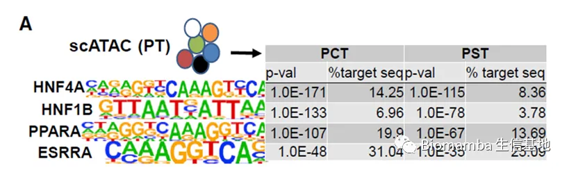
● 接着，通过与启动子上PCT或PST特异的开放染色质区域或包含PPARA或ESRRA结合基序的基因体区染色质区域相交来定义可能的PPARA和ESRRA靶基因。
● 结果：分析之前单细胞基因表达数据，发现在分化的PST和PCT细胞中，PPARA-和ESRRA-靶基因有所丰富。
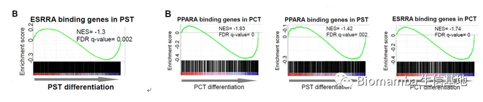
● 随着PT细胞的分化，PPARA-和ESRRA-靶基因丰富，肾脏发育、脂代谢、上皮运输功能相关基因表达升高。
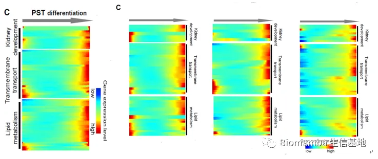
● 结论：PT特异性的PPARA和ESRRA靶基因丰富了肾脏发育、脂代谢、上皮运输功能。
● 6. 从功能上验证ESRRA在细胞分化中的作用
● ① 靶向siRNA和ESRRA siRNA分别转染LTL+PT细胞；单独用载体和ESRRA表达载体转染LTL+PT细胞。
● 结果：ESRRA表达下降导致线粒体功能受损，PT细胞分化相关基因表达下降。
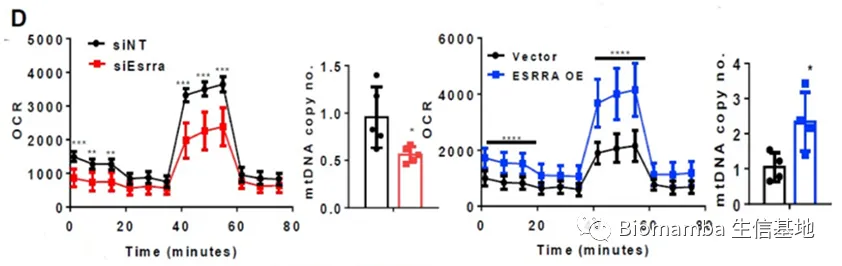
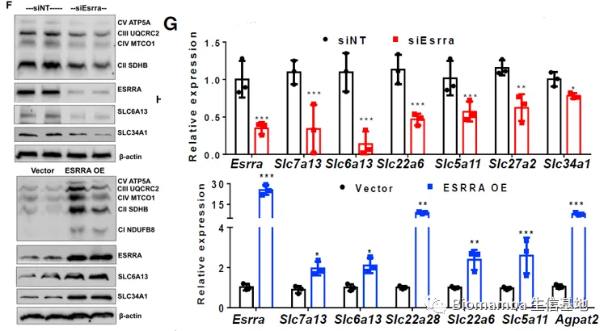
● ②分别用ESRRA、PPARA、ESRRA+PPARA+HNF4a+ HNF1B质粒转染LTL+PT细胞。
● 结果：ESRRA的过表达增加了线粒体mtDNA拷贝数、改善了线粒体功能、导致Slc基因表达上调。
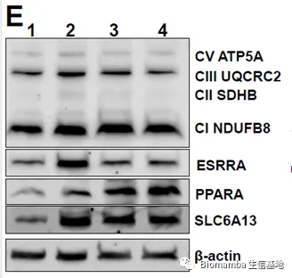
(1) Vector alone
(2) ESRRA OE plasmid
(3) PPARA OE plasmid
(4) co-transfected all 4TFs OE plasmids (ESRRA, PPARA, HNF1B, and HNF4A).
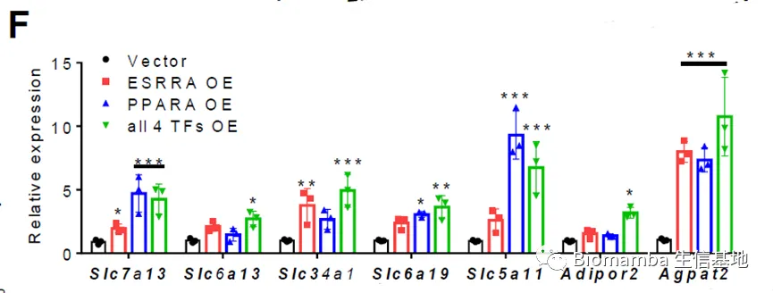
● ③用ESRRA抑制剂XCT790处理培养在REGM培养液中的人原代肾PT上皮细胞(HPTCs)和肾组织(HPTCs)48h。
● 结果：ESRRA受到抑制后，PT细胞中FAO损伤，Slc表达上升。
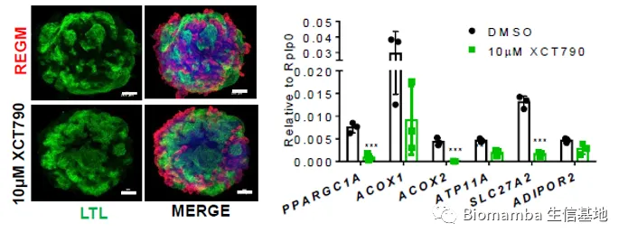
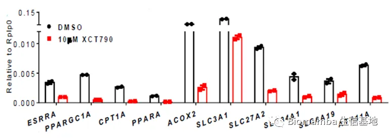
● 结论：抑制ESRRA对PT细胞分化有负面影响。
● 7. ESRRA通过结合启动子or通过改善代谢促进PT细胞分化
● 猜想1：ESRRA通过结合启动子直接调节PT分化。
● 作者通过染色质免疫沉淀结合实时定量PCR（ChIP-qPCR），发现与IgG对照相比，ESRRA的ChIP-qPCR结果显示LTL+ PT细胞中SLC标记(Slc7a13、Slc6a13、Slc22a28、Slc5a11、Slc6a19和Slc13a3)和代谢基因(Adipor2和Acadm)富集。
● 结果：确实存在ESRRA转录因子与DNA的结合，从而直接调节PT细胞分化。
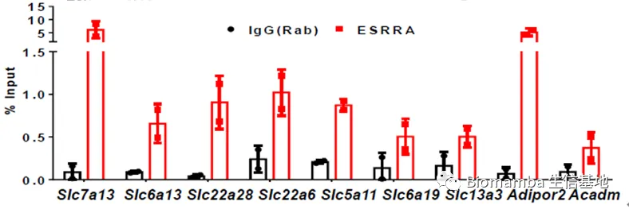
● 猜想2：ESRRA通过改善代谢间接调节PT分化。
● 作者将FAN模型、UUO模型、野生型（c57）进行对比，发现疾病组中ESRRA的表达显著下降。
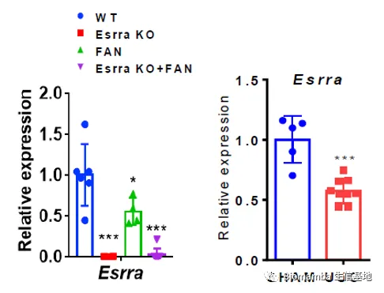
● 作者建立了ESRRA-KO FAN鼠模型，并与FAN鼠对比。
● 结果：ESRRA-KO FAN鼠对肾损伤的易感性增加，促纤维化标志物升高，胶原沉积增加，细胞增殖增加，Slc表达水平下调。
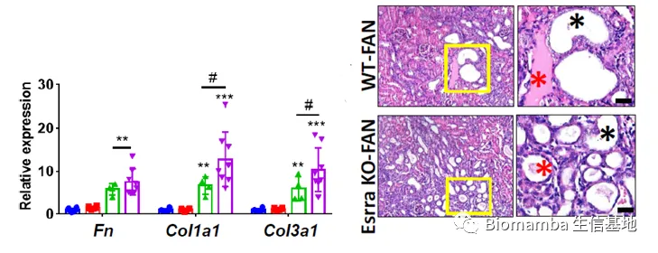
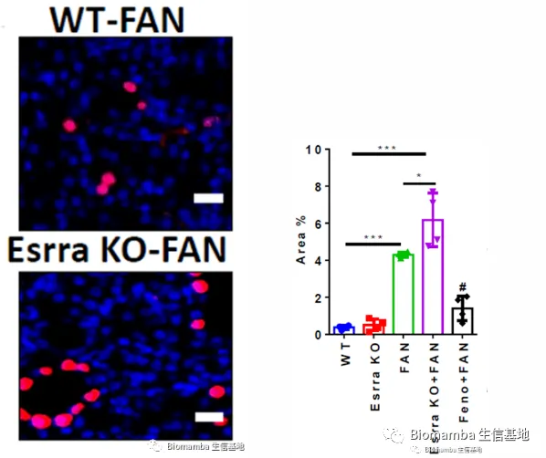
● 8. ESRRA驱动的代谢变化与患者肾脏疾病严重程度相关
● 目的：确定ESRRA驱动的代谢和PT细胞分化是否推动CKD患者疾病发展。
● 作者分析了91例来自健康受试者和糖尿病和高血压肾病患者的显微解剖的人肾小管样本。
● 结果1：脂质代谢基因的表达与PT细胞分化程度呈正相关，与纤维化程度呈负相关。
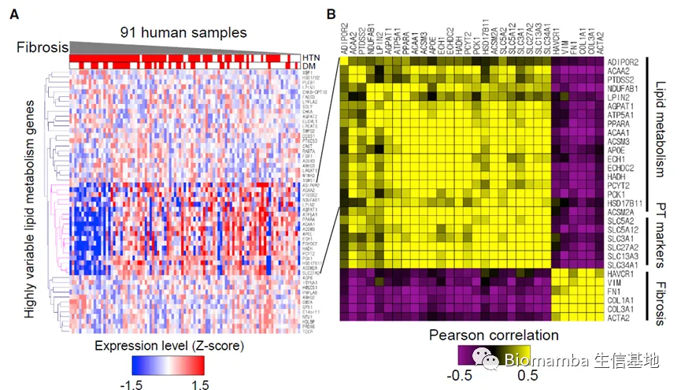
● 结果2：纤维化组织中PCT和PST细胞的比例下降。
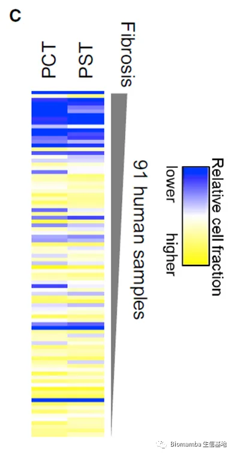
● 使用CellCODE对数据进行了电子反卷积分析。调整模型以适应4种细胞系(PCT、PST、髓系细胞和淋巴系细胞)，将差异表达基因的数量从1980个基因减少到22个基因。
● 结果3：细胞异质性在驱动大量基因表达变化方面发挥了关键作用。
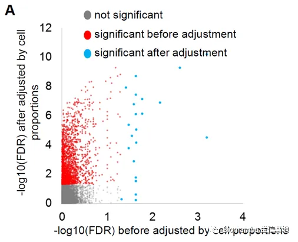
思考
● 论据充分，利用小鼠scRNA-seq、培养细胞、小鼠模型、患者样本和体外肾脏器官进行多维度的综合分析论证。
● 描述具体，使用“促进”、“有利于”、“抑制”等词汇，而非仅仅是“相关”。
● 研究深入，不仅仅停留在代谢与细胞分化相关，而是向上游找到了核受体，这为基于对ESRRA等核受体的依赖来操纵细胞命运、PT细胞分化和新陈代谢提供了理论基础。
● 介绍了许多技术，有数据质量控制、数据预处理与降维、细胞轨迹分析、MitoTracker Green FM流式细胞术分析等数据分析方面的技术，也有Western Blot、免疫荧光等实验方面的技术，为我们设计课题和数据分析提供了思路。
● 文章中很多单细胞测序数据都是共享的，可为我们的研究提供参考，或者与我们的数据一起进行综合分析。
● 视野广阔，可研究的内容很多，例如由非PT细胞入手，或研究其他核受体等。
● 提供了很多思路，例如沿细胞轨迹分析基因表达变化、通过OCR和OXPHOS蛋白水平及线粒体DNA含量来评估线粒体功能，通过天狼星红染色看胶原沉积，通过Ki67染色看细胞增殖等等。

如何联系我们
 公众号后台消息更新不及时，超过48h便不允许回复读者消息，这里给大家留一下领取资料、免费服务器的微信号 ，方便各位随时交流、提建议(科研任务繁重，回复不及时请见谅)。此外呼声一直很高的交流群 也建好了，欢迎大家入群讨论：永久免费的千人生信、科研交流群
公众号后台消息更新不及时，超过48h便不允许回复读者消息，这里给大家留一下领取资料、免费服务器的微信号 ，方便各位随时交流、提建议(科研任务繁重，回复不及时请见谅)。此外呼声一直很高的交流群 也建好了，欢迎大家入群讨论：永久免费的千人生信、科研交流群
大家可以阅读完这几篇之后添加给生信入门初学者的小贴士 如何搜索公众号过往发布内容

 您点的每个赞和在看，我都认真当成了喜欢
您点的每个赞和在看，我都认真当成了喜欢